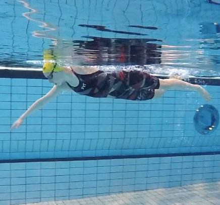

ملخص
- تعني مهارة السباحة أنك قادر على السقوط في الماء ووضع رأسك تحت السطح - وبعد الوصول إلى السطح في المياه العميقة، يمكنك السباحة لمسافة 200 متر، منها 50 مترًا على ظهرك.
- إن القدرة على الطفو على ظهرك يمكن أن تكون الخطوة الأولى نحو تعلم السباحة.
- من خلال العثور على وضع جيد للماء ، سيكون لديك مقاومة أقل للماء، مما سيجعل السباحة أسهل.
- السباحة على الصدر هي أسلوب السباحة الأكثر شيوعًا في السويد، وهي طريقة هادئة وممتعة للتحرك عبر الماء.
- من المهم تعلم سباحة الظهر المنقذة للحياة من أجل التدخل ومساعدة شخص في حالة محنة في الماء.
- الزحف هو التقنية الأسرع والأكثر فعالية - إذا كنت تتقنها.
- الغوص طريقة فعّالة وسريعة للقفز في الماء. الغوصات الطويلة تتطلب محاولة الانزلاق بعيدًا في الماء. أما الغوصات العميقة فتتطلب محاولة النزول.
- كلما غطست أعمق، زاد الضغط على طبلة أذنك. لتخفيف الضغط، يمكنك موازنة الضغط .
- إن تعلم كيفية البقاء طافيًا في مكان واحد يمكن أن يكون ميزة في حالات الطوارئ في الماء، على سبيل المثال.
